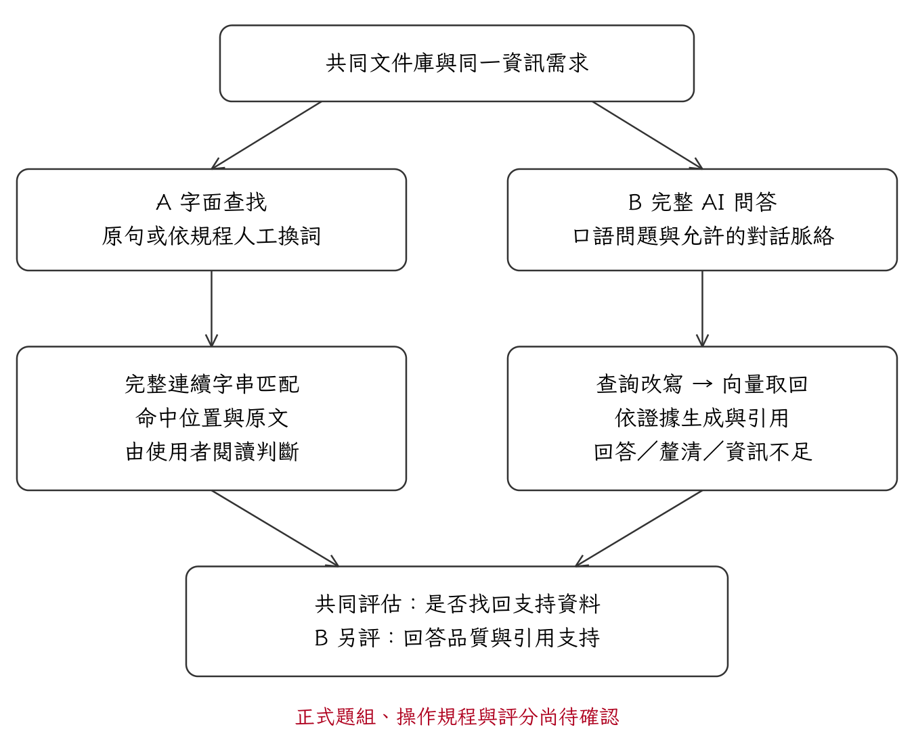

文件範圍與正式題名
現行平台用公開就業服務法規、函釋、指引等資料；原題名的「隱性知識外化文件」需要外化過程的證據。選擇公開文件主線時，要同步調整題名與概念界線；保留外化主線時，要補具來源與形成過程的外化文件。
建議先以目前可核對的公開文件完成工具評估，題名修改另行確認。這是提案，不是已批准的方向。
★ 重要｜正式實驗前必讀 · 2026-10-26
五章工作架構可沿用；正式方法尚未定稿
這份紀錄集中保存研究者要求特別標注的三件事：目前哪些決定會影響後續研究、測試平台架構圖在哪裡，以及 47 頁工作稿各章是否需要修正。
核對結論：五章順序可保留，主線仍是「用口語找回資料並得到有依據的回答」。需要補強的是研究設計、評分與來源證據，第三章是優先項；第四、五章已有寫作結構，正式成效仍未完成。
上一則建議「就業服務公開文件為主、先驗工具效果」尚未獲本人答覆，也沒有查得教授確認；本紀錄不把這項建議當成定案。
這些是待確認事項，不是你已答應的決議；資料整理、文獻補讀與草案製作仍可繼續。
現行平台用公開就業服務法規、函釋、指引等資料；原題名的「隱性知識外化文件」需要外化過程的證據。選擇公開文件主線時，要同步調整題名與概念界線；保留外化主線時，要補具來源與形成過程的外化文件。
建議先以目前可核對的公開文件完成工具評估，題名修改另行確認。這是提案，不是已批准的方向。
固定題目與操作規程可評估找回依據、回答與引用品質；若要主張新手更省時、更容易理解或更滿意，須有相應真人任務與研究程序。
建議先準備可追溯的題目配對方案，同時把真人方案所需資源列出；不直接恢復綠區二十人訪談。
需要具就業服務領域知識者核對答案、適用條件與支持來源。可以跨單位，不限定現職同事。AI 可協助整理，但 AI 初稿或自評不是專家驗證。
工作稿建議至少兩位獨立核對，但人數與資格尚未定案；先由本人確認可行人選，再與教授確認評閱安排。
第一章 緒論 → 第二章 文獻探討 → 第三章 研究方法與平台設計 → 第四章 平台實作與研究結果 → 第五章 結論與建議。
研究問題 → 共同語料 → 題組與參考答案 → A／B 操作規程 → 人工評分 → 分析與結論。題數、規程、評分單位與評閱安排仍待定。
共同文件庫分別供 A 字面查找及 B 查詢改寫、向量取回、依證據回答使用；紀錄用於回查。圖與實作可用不表示研究結果已成立。
不構成新的實驗組，不是模型內部機制，也不能作為論文實驗已完成的證據。
可保留：1.1–1.2 已保留「記得資料卻不知道原作者用詞」與 NotebookLM 口語問答的起點；1.4 已限制 A 不代表所有搜尋引擎。
處理：可先補強兩個研究問題如何共同回答口語查詢需求的連接段；題名、主張範圍與真人研究選擇須等待決策。
可保留：2.1–2.5 已串起知識再使用、詞彙落差、需求表達、向量與生成，以及回答和引用評估；清楚區分歷史布林檢索、Ctrl＋F 與 BM25。
處理：建立「研究問題／構念／來源／擬用指標／適用界線」對照，補讀原文與中文場域研究；本輪未新增未查證的文獻。
可保留：3.1–3.7 已有完整方法工作稿；同語料、開發題與正式題隔離、多證據必要組合、A 生成評分不適用等界線可保留。
處理：先把評分觀察層、前文傳送及記錄規格寫清楚，再做開發題校準；正式題數與規程核定後才啟動正式評估。模型與條件本輪維持原狀。
可保留：4.1–4.3 已正確將 2026-10-22 的工程檢查與案例標為開發資料；33 項測試不是回答正確率，沒有冒充正式實驗。
處理：正式報表須由凍結後的執行與評分紀錄產出。舊 33 項測試保留為有日期的歷史證據，不替換成未重新驗證的當日數字。
可保留：5.2 保留正式結論待補；5.3–5.4 明說設計建議不等於已證明效率提升，也沒有宣稱 B 普遍較優。
處理：立即可做措辭澄清；研究貢獻、效益大小與實務推薦仍依第四章證據回寫。
下圖是目前工作稿的 A／B 與評估概念圖。互動版呈現程式流程，須連上原有 Tailscale；正式題組、操作規程與評分仍待確認。

以下為修訂建議，原 47 頁 Word／PDF 保留。題名、正式規程與結果沒有代為定案。
本研究以兩個相連面向觀察完整口語查詢流程：RQ1 檢查支持資料是否可被取回，RQ2 檢查 B 組能否據此形成正確且可追溯的回答。這項拆分用於辨認失敗發生的階段，不把 B 組縮減為純向量檢索；若未納入真人任務，亦不據此推論實際使用者的理解或省時效果。
本研究所稱釐清，是系統向使用者詢問缺少的條件；所稱追問，是使用者取得回答後提出後續問題。兩者皆屬 B 組的互動流程，正式題組與操作規程須分別說明如何觀察與評分。
現行網頁最多送回最近十二則使用者與助理訊息。助理一般回答以引用主題及未確認事實提示取代全文，釐清訊息則保留問題文字；引擎再將每則訊息限制為二千字元。因此，本研究所稱對話脈絡是經介面篩選的歷史內容，不等於完整歷次回答均被重新送入模型。
B 組須分別保存內部候選集合、實際傳入生成模型的截斷證據及最終引用集合。候選項目包含支持資料，未必表示模型實際收到必要片段；最終引用亦不等同全部候選。正式評分前應明定比較層與檢視窗口，並把 A 組瀏覽下一頁與改用新詞查詢分別記錄。
[待補：補入使用者主動追問的情境與規程，與回覆系統釐清分開記錄；明定多回合結果採何種彙整方式。次數、停止條件與評分窗口須以開發題校準後凍結，不直接把目前三次機會草案視為定案。]
下一階段先確認研究問題與文件範圍，完成來源核對，並以開發題建立及校準操作規程、參考答案與評分規準。校準完成後，凍結正式語料、系統、評分方式與保留題組，再執行正式比較、分析結果並回寫結論。若測試後須修改條件，保留原始批次並另記修訂版本。
本文已就這個問題形成待確認的研究設計工作稿，並完成可操作、可保存查詢證據的開發平台；正式方法及成效結論，仍須由後續確認與研究資料建立。